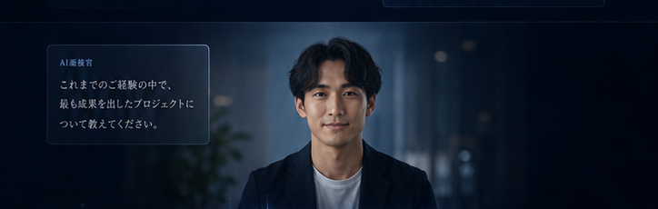

01 / 07
INTERVIEW DESIGN
AI面接官
ポジションを作成すると、AIが最適な面接を設計します。
職種を作成中…
プロダクトマネージャー
プロダクトの戦略立案から要件定義、開発ディレクションまで
一貫してリードし、事業成長に貢献する。
一貫してリードし、事業成長に貢献する。

候補者の参加を待っています…
山田 太郎さんが参加しました
山田 太郎
◷ 03:24
SCROLL TO BEGIN